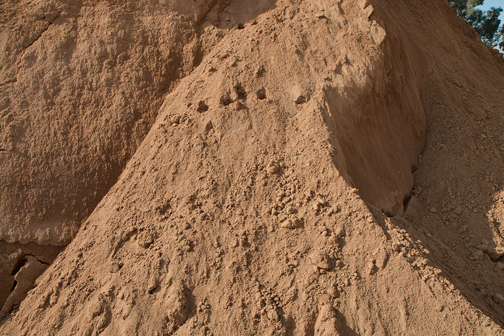

Sandy Loam Soil

- Fertility Rate - Moderately Fertile.
- Colour - Pale Brown, Beige or Gray.
- Sandy loam soil is a type of soil that has a balanced mixture of Sand, Silt, and Clay particles.
- The pH level of sandy loam soil is generally neutral to slightly acidic
- The soil's aeration, allowing the roots to receive sufficient oxygen.
- Sandy loam soil has good drainage due to its sandy nature.
- Provides a Good Environment for root development.